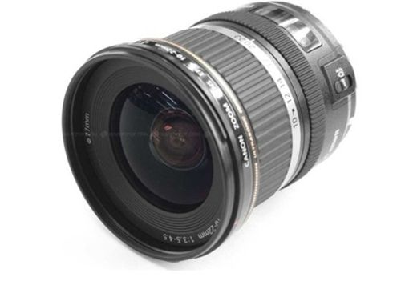

 专为采用APS-C画幅图像感应器的EOS数码单反相机设计开发，并能够带来真正超广角拍摄乐趣的广角变焦镜头。换算成35mm规格，可覆盖相当于约16mm视角的超广角范围。能将广阔的风景收入一张照片，即使在没有足够后退空间的室内亦能拍下宽广的范围，而无需担心拍摄距离的影响。针对APS-C画幅相机缩小了成像圈。后焦距的缩短使镜头同时实现了小型化和轻便化。高性能超级UD（超级超低色散）镜片效果媲美萤石镜片，可较大程度抑制色像差的产生。几乎所有波长的光线都能在正确位置成像，因此整个画面范围内画质锐利。此款镜头的一大特点是整个变焦范围内的歪曲像差很少，画面边缘线条的成像也很少出现不自然的细微波纹，因此风光摄影时对水平线也具有较好的表现力。边缘部分画质稳定，整个画面均可有效利用，拍摄时亦可进行自由构图，而无需担心画面中主被摄体的位置。镜头通过环形USM超声波马达驱动，几乎听不到对焦声音。此外，通过全时手动对焦可轻松实现对合焦位置的微调。采用了内对焦方式，对焦时镜头的全长不会发生变化，加之镜头前部不会转动，操作性良好。
| 镜头焦距 | 10-22mm |
|---|---|
| APS-C画幅下的35mm规格换算焦距 *1 | 约16-35mm |
| 镜头结构 | 10组13片 |
| 光圈叶片 | 6片（圆形光圈） |
| 最小光圈 *2 | 22-27 |
| 最近对焦距离 | 约0.24米 |
| 最大放大倍率 *3 | 约0.17倍 |
| 驱动系统 | 环形USM超声波马达 |
| 手抖动补偿效果 | - |
| 滤镜直径 | 77毫米 |
| 最大直径及长度 | 约Φ83.5×89.8毫米 |
| 重量 | 约385克 |